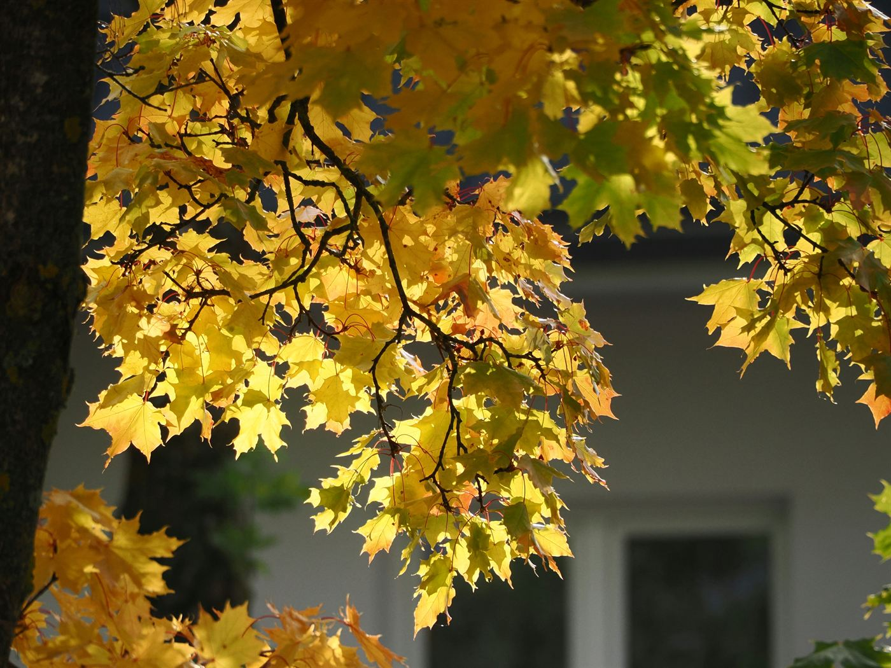
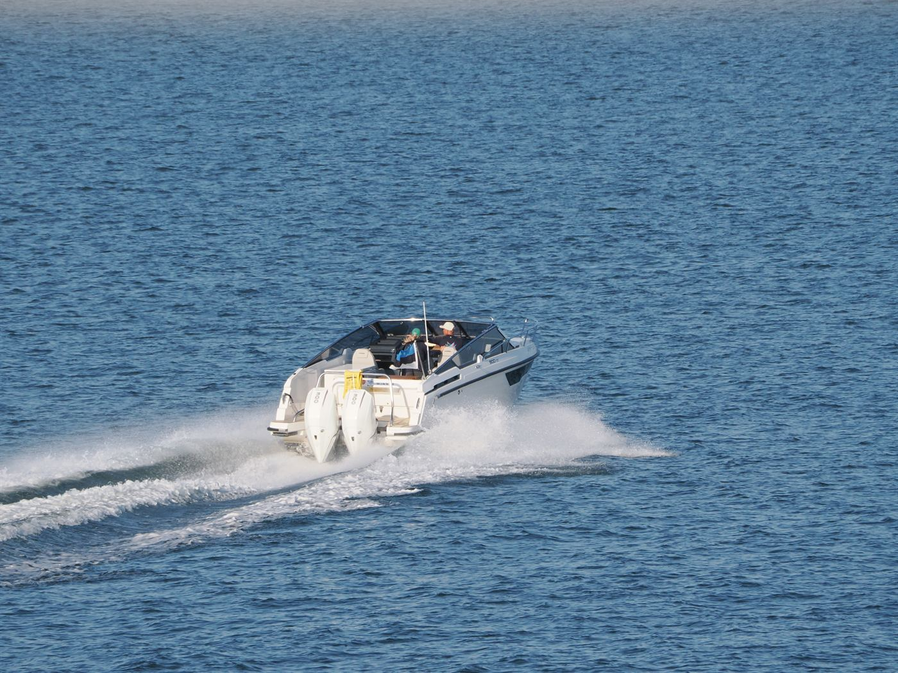
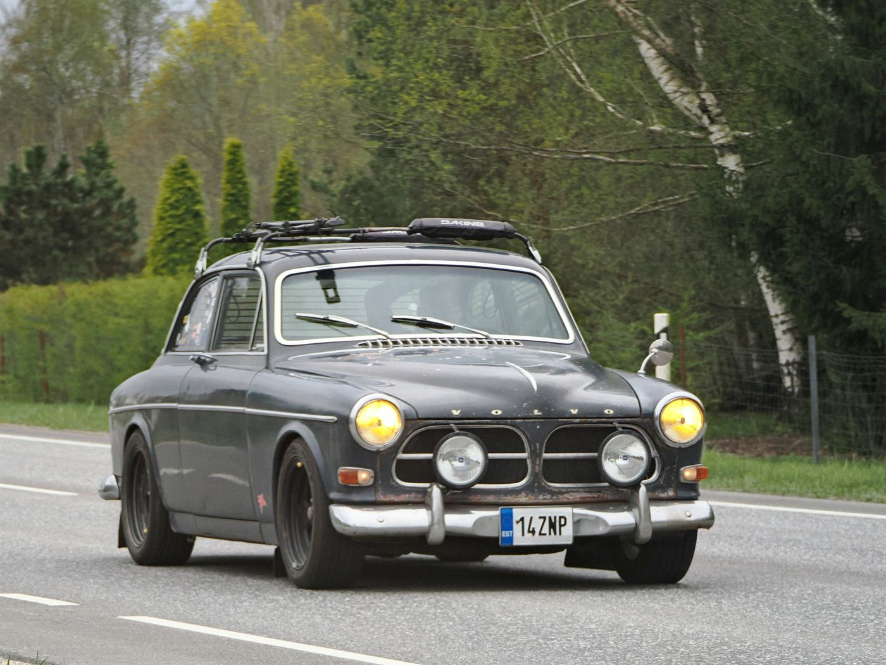

kolm kuud,
tuhat väikest asja.
Panin kokku kõik, mis juhtus vahemikus juuni ja august: sõidud, hommikud, inimesed ja need hetked, mida telefonikaamerast ei leia, sest ma lihtsalt unustasin pildistada.

sel suvel õppisin:
- ärkama enne äratust
- tegema kohvi, mis ei ole liiga tugev
- ütlema „ei“ ilma vabandusteta
edasiminek: 2/3

PÄRNU → KUURESSAARE
14:20
istekoht 7A · aken · 12. juuli
pileti nr 004821
„Suvi ei ole aastaaeg. Suvi on see, kui sa lõpuks rahuned.“
— mina, bussis, 12. juuli

suve soundtrack
- 01 Raudtee — Vaikne hommik
- 02 Suve lõpp — Pikk vari
- 03 Aken lahti — Klaasist linn
- 04 Ära tule veel — Mari ja pojad
- 05 Teine tuba — Pikk vari
kuulatud 64 korda · lemmik #02
kõige parem osa
Ei olnud see suur reis ega midagi, mida saaks piltide pealt näidata. Kõige parem osa oli üks tavaline teisipäeva õhtu, kui me istusime trepil, sõime arbuusi ja rääkisime tühjast-tähjast, kuni läks pimedaks.
Kirjuta mulle ♡